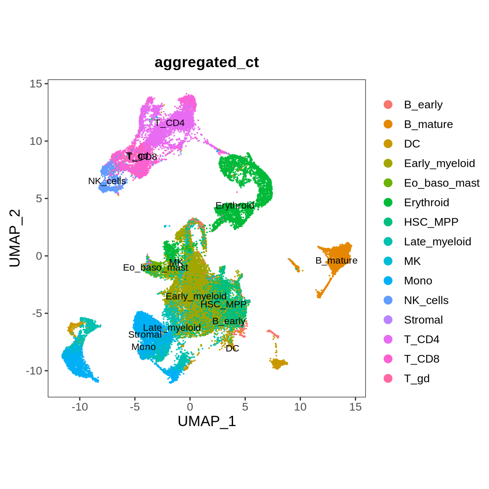
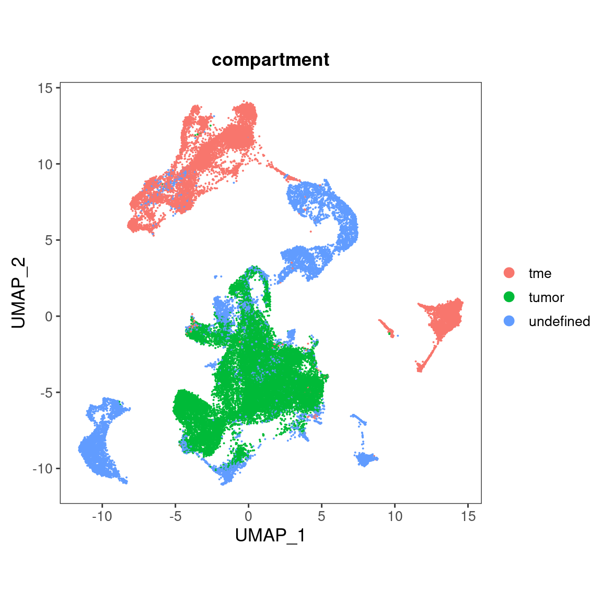
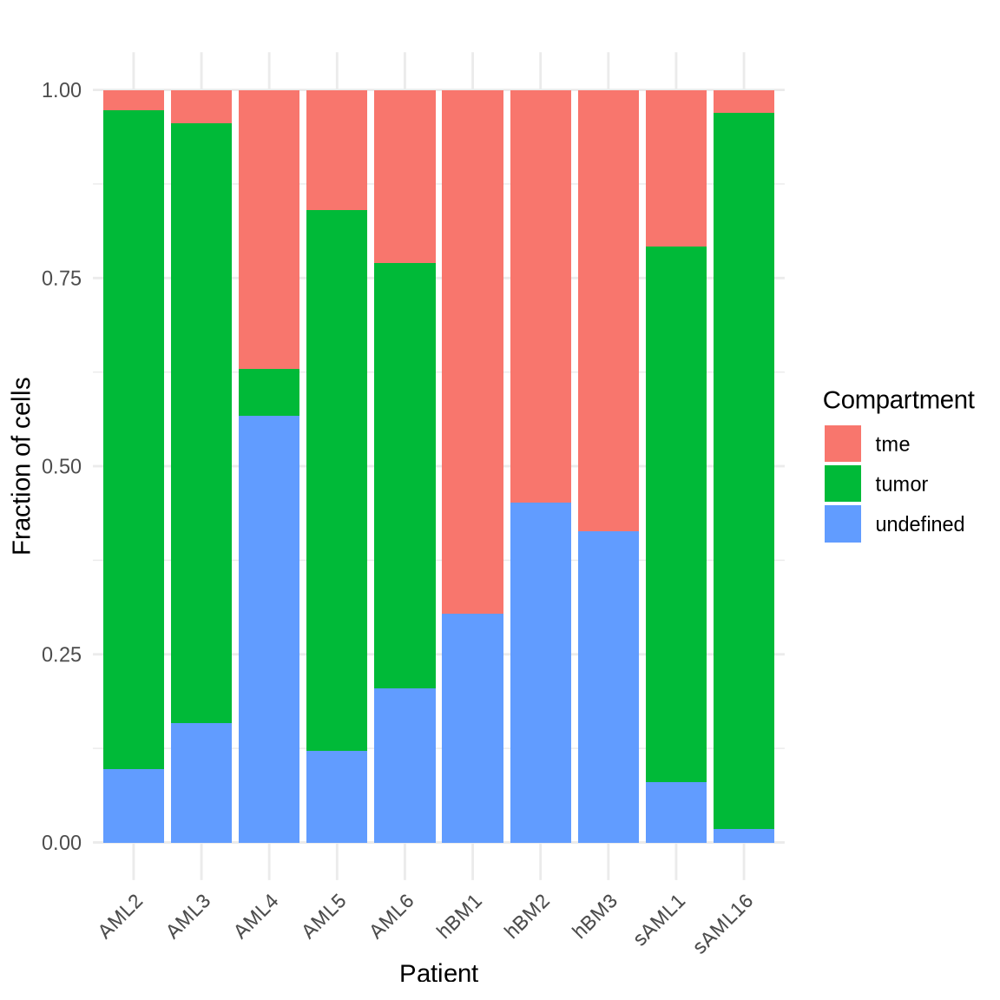

Last updated: 2024-10-18
Checks: 6 1
Knit directory: phenotype_genotype/
This reproducible R Markdown analysis was created with workflowr (version 1.7.1). The Checks tab describes the reproducibility checks that were applied when the results were created. The Past versions tab lists the development history.
Great! Since the R Markdown file has been committed to the Git repository, you know the exact version of the code that produced these results.
Great job! The global environment was empty. Objects defined in the global environment can affect the analysis in your R Markdown file in unknown ways. For reproduciblity it’s best to always run the code in an empty environment.
The command set.seed(20240315) was run prior to running
the code in the R Markdown file. Setting a seed ensures that any results
that rely on randomness, e.g. subsampling or permutations, are
reproducible.
Great job! Recording the operating system, R version, and package versions is critical for reproducibility.
Nice! There were no cached chunks for this analysis, so you can be confident that you successfully produced the results during this run.
Using absolute paths to the files within your workflowr project makes it difficult for you and others to run your code on a different machine. Change the absolute path(s) below to the suggested relative path(s) to make your code more reproducible.
| absolute | relative |
|---|---|
| /hpcnfs/scratch/P_DIMA_SCMSEQ/analysis/scrnaseq/phenotype_genotype/src/functions.R | src/functions.R |
| /hpcnfs/scratch/P_DIMA_SCMSEQ/analysis/scrnaseq/phenotype_genotype/data/00_malignant_non_malignant_annotation.rds | data/00_malignant_non_malignant_annotation.rds |
| /hpcnfs/scratch/P_DIMA_SCMSEQ/analysis/scrnaseq/phenotype_genotype/data/01_tme_annotation.rds | data/01_tme_annotation.rds |
Great! You are using Git for version control. Tracking code development and connecting the code version to the results is critical for reproducibility.
The results in this page were generated with repository version f70129f. See the Past versions tab to see a history of the changes made to the R Markdown and HTML files.
Note that you need to be careful to ensure that all relevant files for
the analysis have been committed to Git prior to generating the results
(you can use wflow_publish or
wflow_git_commit). workflowr only checks the R Markdown
file, but you know if there are other scripts or data files that it
depends on. Below is the status of the Git repository when the results
were generated:
Ignored files:
Ignored: .Rproj.user/
Ignored: data/
Ignored: src/
Untracked files:
Untracked: analysis/02_integration_phenotype_genotype_sAML1.Rmd
Untracked: phenotype_genotype.Rproj
Note that any generated files, e.g. HTML, png, CSS, etc., are not included in this status report because it is ok for generated content to have uncommitted changes.
These are the previous versions of the repository in which changes were
made to the R Markdown (analysis/01_tme_annotation.Rmd) and
HTML (docs/01_tme_annotation.html) files. If you’ve
configured a remote Git repository (see ?wflow_git_remote),
click on the hyperlinks in the table below to view the files as they
were in that past version.
| File | Version | Author | Date | Message |
|---|---|---|---|---|
| Rmd | f70129f | Yinxiu Zhan | 2024-10-18 | Rebuild to associate with workflowr tracking |
| Rmd | b15d387 | Yinxiu Zhan | 2024-10-17 | Add tumor microenviroment identification |
| html | b15d387 | Yinxiu Zhan | 2024-10-17 | Add tumor microenviroment identification |
The objective of the analysis is to annotate the tumor microenvironment (TME).
As an initial approach to defining the TME, we will include cells from B_Mature, T_CD4, T_CD8, and NK cells as part of the TME. In a subsequent phase, we will refine this definition by leveraging TCR rearrangement data from single-cell analysis, using tools like TRUST4 to identify cells with TCR rearrangements.
Below, we present the UMAP visualization, color-coded by cell type annotation and compartment classification.

| Version | Author | Date |
|---|---|---|
| b15d387 | Yinxiu Zhan | 2024-10-17 |

| Version | Author | Date |
|---|---|---|
| b15d387 | Yinxiu Zhan | 2024-10-17 |
Finally, we quantify the fraction of each compartment for each sample, as illustrated in the bar plot below.

| Version | Author | Date |
|---|---|---|
| b15d387 | Yinxiu Zhan | 2024-10-17 |
R version 4.3.1 (2023-06-16)
Platform: x86_64-pc-linux-gnu (64-bit)
Running under: Ubuntu 22.04.3 LTS
Matrix products: default
BLAS: /usr/lib/x86_64-linux-gnu/openblas-pthread/libblas.so.3
LAPACK: /usr/lib/x86_64-linux-gnu/openblas-pthread/libopenblasp-r0.3.20.so; LAPACK version 3.10.0
locale:
[1] LC_CTYPE=en_US.UTF-8 LC_NUMERIC=C
[3] LC_TIME=en_US.UTF-8 LC_COLLATE=en_US.UTF-8
[5] LC_MONETARY=en_US.UTF-8 LC_MESSAGES=en_US.UTF-8
[7] LC_PAPER=en_US.UTF-8 LC_NAME=C
[9] LC_ADDRESS=C LC_TELEPHONE=C
[11] LC_MEASUREMENT=en_US.UTF-8 LC_IDENTIFICATION=C
time zone: Etc/UTC
tzcode source: system (glibc)
attached base packages:
[1] stats graphics grDevices utils datasets methods base
other attached packages:
[1] mclust_6.0.0 SeuratObject_4.1.3 Seurat_4.3.0.1 lubridate_1.9.2
[5] forcats_1.0.0 stringr_1.5.0 dplyr_1.1.3 purrr_1.0.2
[9] readr_2.1.4 tidyr_1.3.0 tibble_3.2.1 ggplot2_3.4.2
[13] tidyverse_2.0.0
loaded via a namespace (and not attached):
[1] RColorBrewer_1.1-3 rstudioapi_0.15.0 jsonlite_1.8.7
[4] magrittr_2.0.3 spatstat.utils_3.0-3 farver_2.1.1
[7] rmarkdown_2.24 fs_1.6.3 vctrs_0.6.3
[10] ROCR_1.0-11 spatstat.explore_3.2-3 htmltools_0.5.6
[13] sass_0.4.7 sctransform_0.3.5 parallelly_1.36.0
[16] KernSmooth_2.23-22 bslib_0.5.1 htmlwidgets_1.6.2
[19] ica_1.0-3 plyr_1.8.8 plotly_4.10.2
[22] zoo_1.8-12 cachem_1.0.8 whisker_0.4.1
[25] igraph_1.4.3 mime_0.12 lifecycle_1.0.3
[28] pkgconfig_2.0.3 Matrix_1.5-3 R6_2.5.1
[31] fastmap_1.1.1 fitdistrplus_1.1-11 future_1.33.0
[34] shiny_1.7.5 digest_0.6.33 colorspace_2.1-0
[37] patchwork_1.1.3 rprojroot_2.0.3 tensor_1.5
[40] irlba_2.3.5.1 labeling_0.4.3 progressr_0.14.0
[43] fansi_1.0.4 spatstat.sparse_3.0-2 timechange_0.2.0
[46] httr_1.4.7 polyclip_1.10-4 abind_1.4-5
[49] compiler_4.3.1 withr_2.5.0 highr_0.10
[52] MASS_7.3-60 tools_4.3.1 lmtest_0.9-40
[55] httpuv_1.6.11 future.apply_1.11.0 goftest_1.2-3
[58] glue_1.6.2 nlme_3.1-162 promises_1.2.1
[61] grid_4.3.1 Rtsne_0.16 cluster_2.1.4
[64] reshape2_1.4.4 generics_0.1.3 gtable_0.3.4
[67] spatstat.data_3.0-1 tzdb_0.4.0 data.table_1.14.8
[70] hms_1.1.3 sp_2.0-0 utf8_1.2.3
[73] spatstat.geom_3.2-5 RcppAnnoy_0.0.21 ggrepel_0.9.3
[76] RANN_2.6.1 pillar_1.9.0 later_1.3.1
[79] splines_4.3.1 lattice_0.21-8 survival_3.5-5
[82] deldir_1.0-9 tidyselect_1.2.0 miniUI_0.1.1.1
[85] pbapply_1.7-2 knitr_1.44 git2r_0.32.0
[88] gridExtra_2.3 scattermore_1.2 xfun_0.40
[91] matrixStats_1.0.0 stringi_1.7.12 workflowr_1.7.1
[94] lazyeval_0.2.2 yaml_2.3.7 evaluate_0.21
[97] codetools_0.2-19 cli_3.6.1 uwot_0.1.16
[100] xtable_1.8-4 reticulate_1.32.0 munsell_0.5.0
[103] jquerylib_0.1.4 Rcpp_1.0.11 globals_0.16.2
[106] spatstat.random_3.1-6 png_0.1-8 parallel_4.3.1
[109] ellipsis_0.3.2 listenv_0.9.0 viridisLite_0.4.2
[112] scales_1.2.1 ggridges_0.5.4 leiden_0.4.3
[115] rlang_1.1.1 cowplot_1.1.1